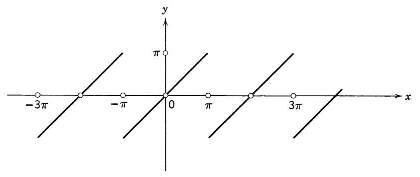
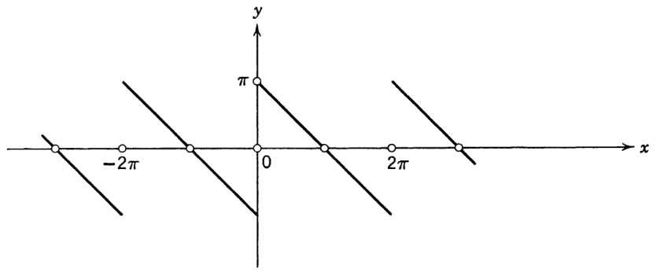

a. 傅里叶系数
n 阶三角多项式
f(x)=Sn(x)=21a0+ν=1∑n(aνcosνx+bνsinνx)(16)依赖 2n+1 个系数 aν,bν。值得注意的是，这些“傅里叶系数”可以由和函数 f(x) 的值简单地表示为
aμ=π1∫−ππf(x)cosμxdx,bμ=π1∫−ππf(x)sinμxdx.(17)只须将 (16) 乘以 cosμx 或 sinμx 再积分即可证明。由正交关系（见第 274 页），只有 ν=μ 的项对积分有非零贡献。用复数记号，
f(x)=Sn(x)=ν=−n∑nανeiνx,(16a)相应的复傅里叶系数为
αν=2π1∫−ππf(x)e−iνxdx.(17a)也可由第 583 页的复正交关系 (9) 看出。在 (16) 中把常数项写成 21a0，只是为了使 (17) 在下标为零时也适用。
现在自然要问：让 (16) 中傅里叶多项式的次数 n 趋于无穷，是否就能表示周期为 2π 而其他方面基本任意的函数？这个问题引向傅里叶级数的主要定理。我们将证明：每个分段连续、且具有分段连续的一阶和二阶导数的周期函数 f(x) 都能表示为无穷的傅里叶级数
f(x)=2a0+ν=1∑∞(aνcosνx+bνsinνx),或f(x)=ν=−∞∑∞ανeiνx,系数由 (17)、(17a) 给出。
b. 基本引理
回忆一下，在一个区间上分段连续，是指函数除去有限个跳跃间断外处处连续。又按第 573 页 (4) 的约定，周期函数在一个间断点取两侧极限的平均值。所谓 f 分段连续并具有分段连续的一、二阶导数，意即可以把整个区间分为有限个小区间，使 f,f′,f′′ 在每个开小区间中都连续，并在两端趋于确定的有限极限。
证明主要定理的关键是一个简单的事实。
引理 若 k(x) 及其一阶导数 k′(x) 在 a≤x≤b 上分段连续，则 Kλ=∫abk(x)sinλxdx 在 λ→∞ 时趋于零。
证明 先设 k,k′ 在闭区间上连续，分部积分得
Kλ=∫abk(x)sinλxdx=λ1[k(a)cosλa−k(b)cosλb+∫abk′(x)cosλxdx].(18)当 λ 增大时，右边显然趋于零。若 k 或 k′ 在区间内的若干点 ξ 处有跳跃间断，就在这些点分段，对各段应用上述论证再相加。
其实无须假定 k′ 存在，只需 k 分段连续，引理仍成立。这里略去证明；基本想法是，λ>0 时，sinλx 在相邻的、长度为 π/λ 的各区间上正负相间。当 λ 很大时，由 k(x) 的连续性，相邻两段对积分的贡献几乎相互抵消。
c. ∫0∞(sinz)/zdz=π/2 的证明
作为引理的一个应用，我们来算积分
I=∫0∞zsinzdz.(19)此反常积分由 I=limM→∞IM, IM=∫0M(sinz)/zdz 定义。第 310 页已用分部积分证明其收敛性，即该极限存在。这里重述证明。若 0<M<N，有
∣IN−IM∣=∫MNzsinzdz=−zcoszMN−∫MNz2coszdz≤M1+N1+∫MNz2dz=M2.(20)因此只要 M,N 都足够大，IN 与 IM 就可任意接近，柯西收敛准则保证了极限存在。在 (20) 中令 N→∞，还得到趋近极限的速率估计
∣I−IM∣≤M2.(20a)
译者注 原书 (20) 的第二行将剩余积分前印成了正号。由 d(−cosz/z)/dz=sinz/z+cosz/z2 可核实此处应取负号；随后对绝对值的估计相同。
把 I 改写成固定有限区间上的积分的极限。任取 p>0，令 M=λp，代换 z=λx, dz=λdx，得
Iλp=∫0λpzsinzdz=∫0pxsinλxdx.固定正数 p 而让 λ→∞，则 λp→∞，所以 I=limλ→∞∫0p(sinλx)/xdx。更确切地说，由 (20a)，误差至多为 2/(λp)。所以对于一切 p>0，这些积分趋于同一个 I；且只要 p 不小于某固定正数 P，收敛关于 p 就是一致的。确实，λ>2/(Pϵ) 时，误差都小于 ϵ。
现在对 k(x)=1/x−1/[2sin(x/2)] 使用第 588 页的引理。令 k(0)=0，则 k 在 0≤x<2π 上连续且有连续的一阶导数（见第 466 页）。所以对 0≤p<2π，
∫0psinλx(x1−2sin(x/2)1)dx→0(λ→∞).且由 (18)，收敛在 0≤p≤π 上一致，因为 ∣k∣,∣k′∣ 在这一区间上都有界。结合前面的结果，对 0<p<2π 有 limλ→∞∫0psin(λx)/[2sin(x/2)]dx=I，且在 P≤p≤π 上收敛一致。取 p=π, λ=n+21，由第 586 页 (15)，对每个整数 n≥0 此积分恰等于 π/2。让 λ 沿上述值趋于无穷，即得
∫0∞zsinzdz=2π.(21)同时已经证明
λ→∞lim∫0pxsinλxdx=2π(21a)对 P≤p 一致成立，并且
λ→∞lim∫0p2sin(x/2)sinλxdx=2π(21b)对 P≤p≤π 一致成立，P 为任意固定正数。
d. 函数 ϕ(x)=x 的傅里叶展开
刚得到的结果直接给出两个相关的分段线性周期函数的傅里叶展开。在 −π<x<π 内，定义 ϕ(x)=x，并令
χ(x)=⎩⎨⎧π−x,0,−π−x,x>0,x=0,x<0.(22)见图 8.7、8.8。将 ϕ 周期地延拓到这一区间之外，它在端点有跳跃间断；χ 则在 x=0 处跃升 2π。这两个周期延拓后的函数显然满足 χ(x)=ϕ(π−x)。

图 8.7 函数 φ(x)

图 8.8 函数 χ(x)
在 0<x≤π 内，由第 586 页 (14) 及 (21b)，取 λ=n+21, p=x，令 n→∞，就得到
χ(x)=2(sinx+2sin2x+3sin3x+⋯).(23a)因两边都是奇函数，式子对 −π≤x<0 也成立。在 ϵ<∣x∣≤π 上收敛一致，ϵ 可以是任意小的正数。在 x=0 每一项都是零，与 χ(0) 的定义一致。因两边都有周期 2π，(23a) 就对所有 x 成立。容易验证这个展开的系数确为第 587 页 (17) 定义的傅里叶系数。由 ϕ(x)=χ(π−x)，立得
ϕ(x)=2ν=1∑∞(−1)ν+1νsinνx=2(sinx−21sin2x+31sin3x−⋯).(23b)只要 ∣x∣<π−ϵ，使 x 离开间断点 ±π 一定距离，收敛就是一致的。取 x=π/2 再一次得到莱布尼茨级数 π/2=2(1−31+51−⋯)。
χ,ϕ 的这两个级数都不是处处绝对收敛的。例如 x=π/2 时，非零项的绝对值组成发散级数 2∑ν=1∞1/(2ν−1)。式 (23b) 还是一个值得注意的例子：连续函数的无穷级数对每个 x 都收敛，但其和是有间断的分段线性函数 ϕ(x)。每个部分和都是有限个连续函数之和，因而连续。连续函数级数若一致收敛，其和也连续，故在 ϕ 的间断点 x=±π,±3π,… 的任何邻域内，傅里叶级数都不可能一致收敛。第 579 页图 8.4 表明，各次部分和是连续的三角多项式，它们如何在避开间断点的闭区间上一致逼近 21ϕ(x)，以及在端点附近如何变化得愈来愈急。
e. 傅里叶展开的主要定理
傅里叶系数
有了前面的准备，现在很容易确认一大类函数都能展开。以 2π 为周期的函数 f(x) 的展开形如
f(x)=21a0+ν=1∑∞(aνcosνx+bνsinνx),(24a)或用复数记号
f(x)=ν=−∞∑∞ανeiνx.(24b)先假定 f 有一致收敛的展开 (24a) 或 (24b)。将两边分别乘 cosμx,sinμx 或 e−iμx，由 −π 到 π 积分，利用正交关系（第 274、583 页），就能确定系数。所用的关系为
∫−ππsinνxsinμxdx=∫−ππcosνxcosμxdx∫−ππsinνxcosμxdx∫−ππeiνxe−iμxdx={0,π,μ=ν,μ=ν=0,=0,={0,2π,μ=ν,μ=ν.(25)前两行的下标取非负整数。把积分变量写作 t，立即得到
aμ=π1∫−ππf(t)cosμtdt,bμ=π1∫−ππf(t)sinμtdt(μ=0,1,2,…),(26a)αμ=2π1∫−ππf(t)e−iμtdt(μ=0,±1,±2,…).(26b)因此若 f 能展开成一致收敛的 (24a) 或 (24b)，系数只能是这些值。但即使还没有证明上述试探性的做法合理，(26a)、(26b) 已经为 [−π,π] 上每个连续或分段连续的函数定义了几列数 aν,bν,αν，称为它的傅里叶系数。对给定函数，用它们组成傅里叶部分和
Sn(x)=21a0+ν=1∑n(aνcosνx+bνsinνx)=ν=−n∑nανeiνx.现在要证明这些部分和在 n→∞ 时确实收敛，且极限就是 f(x)。
主要定理 对于任意以 2π 为周期的分段连续函数 f，若其一、二阶导数分段连续，则用 (26a) 或 (26b) 的系数组成的傅里叶级数
21a0+ν=1∑∞(aνcosνx+bνsinνx),(27a)或
ν=−∞∑∞ανeiνx(27b)收敛到 f(x) 的值。在间断点，函数值须定义为
f(x)=21[f(x+0)+f(x−0)].(27c)原注 1（第 594 页） 重申一次，这一定理可对广泛得多的函数类证明（例如参见 §8.6），但此处的表述已足以满足多数应用。
证明 在第 n 个傅里叶多项式中代入系数的积分表示 (26a)，交换有限求和与积分，得到
Sn(x)=π1∫−ππf(t)[21+ν=1∑n(cosνtcosνx+sinνtsinνx)]dt.由余弦加法公式，中括号为 21+∑ν=1ncosν(t−x)，再用第 586 页 (14) 的求和公式，得
Sn(x)=2π1∫−ππf(t)sin[(t−x)/2]sin[(n+21)(t−x)]dt.(28)令 τ=t−x，并利用周期性把积分区间平移 x（见第 574 页），得
Sn(x)=2π1∫−ππf(x+τ)sin(τ/2)sin[(n+21)τ]dτ,(28a)这里 x 固定。要证的是
n→∞limSn(x)=n→∞lim2π1∫−ππf(x+t)sin(t/2)sin[(n+21)t]dt=f(x).(29)原注 1（第 595 页） 这里仅证明 (27a)，以第 585 页 (13b) 的代换即得 (27b)。
因对所有 x 都有 f(x)=21[f(x+0)+f(x−0)]，根据第 586 页 (15)，
Sn(x)−f(x)=π1∫0π2sin(t/2)f(x+t)−f(x+0)sin[(n+21)t]dt+π1∫−π02sin(t/2)f(x+t)−f(x−0)sin[(n+21)t]dt.倘若能证明这两个商作为 t 的函数，分别在 [0,π]、[−π,0] 上分段连续，并且都有分段连续的一阶导数，就可以用第 588 页的基本引理断定两个积分都趋于零，(29) 便获证明。因此，在 f,f′,f′′ 分段连续的假设下，只需对固定 x 考察
ϕ(t)={[f(x+t)−f(x+0)]/[2sin(t/2)],[f(x+t)−f(x−0)]/[2sin(t/2)],0<t<π,−π<t<0.分母只在 t=0 为零，因此除零点附近外，ϕ,ϕ′ 显然分段连续。唯一可能出问题的是奇点 t=0；只须证明从两侧趋于零时 ϕ,ϕ′ 各有极限。事实上
ϕ(+0)=f′(x+0),ϕ(−0)=f′(x−0),ϕ′(+0)=21f′′(x+0),ϕ′(−0)=21f′′(x−0).令 ϕ(t)=g(t)h(t)，其中对 t=0 取 h(t)=t/[2sin(t/2)]，另取 h(0)=1。据第五章第 465 页，h 在 [−π,π] 上连续且有连续导数，h(0)=1, h′(0)=0。因此只要 g,g′ 的相应极限存在，当 t→0，ϕ 与 g、ϕ′=gh′+g′h 与 g′ 分别有同一极限。
在 0<t<π 且足够接近零时，以中值定理得
g(t)=tf(x+t)−f(x+0)=f′(x+ξ),0<ξ<t.（关于未定式的一般说明见第五章第 464 页。）当 t→0 也有 ξ→0，因此 g(+0)=f′(x+0)。再求导，
g′(t)=t2tf′(x+t)+f(x+0)−f(x+t).当 t→0 时分子分母都趋于零，其导数分别为 tf′′(x+t),2t。由广义中值定理（第 222 页），存在介于 0 与 t 间的 η，使 g′(t)=ηf′′(x+η)/(2η)=21f′′(x+η)。因 η→0，便得 g′(+0)=ϕ′(+0)=21f′′(x+0)。对负 t 的论证相同。至此，使用引理的条件已经满足，主要定理得证。
所得结果已足以应付微积分及其应用中的需要。然而从狄利克雷的开创工作以来，数学家常想获得更大的普遍性，即设法展开更广泛的一类函数。这些努力推动了对函数与积分概念的细致分析，也发展出高等傅里叶分析这一引人入胜的专门领域。这里就不再深入了。
原注 1（第 597 页） 确有连续函数不能处处用自己的傅里叶级数表示。也有函数 f(x) 能由收敛的三角级数表示，但该级数并非以 (26) 为系数的傅里叶级数。这些例子说明，在细致的研究中有必要区别一般三角级数与傅里叶级数。它们还说明，采用强于连续性的条件是有道理的；不过，本定理及 §8.6 推广中的假设又比实际所需强得多。一般理论参见 A. Zygmund 著 Trigonometrical Series，Chelsea Publishing Co.，1952 年。